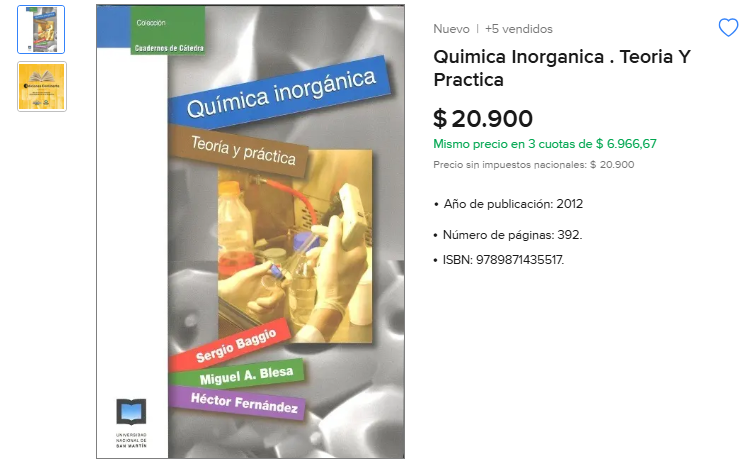

Química Inorgánica
qué hay en el drive?
- programa de la materia
- gabinetes y laboratorios 2025
- ppts de teoría 2025
- apuntes / modelos de parciales
- apuntes del final (general, por unidad, preguntas, modelos, etc)
sobre los apuntes
la mayoría del material está hecho en base a Química Inorgánica de Baggio-Blessa-Fernandez, Química de Chang y el libro de Baran para la unidad de bioinorgánica

no lo encontré en pdf; si lo consigo, lo subo al drive
mi recomendación es que hagas tus propios apuntes. si querés usar los míos como base, están subidos como Word.
sobre las unidades específicas de cada grupo: preguntan las propiedades generales (periódicas y físicas). de la unidad 13, aprendé un ejemplo: el hierro en la hemoglobina para transportar oxígeno, el zinc en la transcripción génica, etc. también estudia el diagrama de Bertrand y cómo se clasifican los elementos
sobre el final
- hay una parte escrita y una parte oral. la parte escrita no es eliminatoria
- la parte escrita se arma en el momento: nunca es la misma para todos, y aunque rindas la misma unidad que otra persona las preguntas van a variar
- preguntan bastante sobre el laboratorio: qué hiciste, qué pasó, cambios de color, etc.
- a diferencia de general, no te hacen pasar al pizarrón. una vez que resolvés el escrito, se sientan frente a vos y empiezan a preguntarte sobre las unidades
- aprovechá la clase de consulta y preguntá qué toman, cómo es la modalidad, etc.